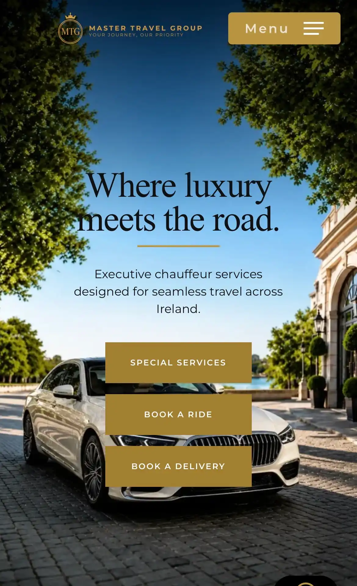
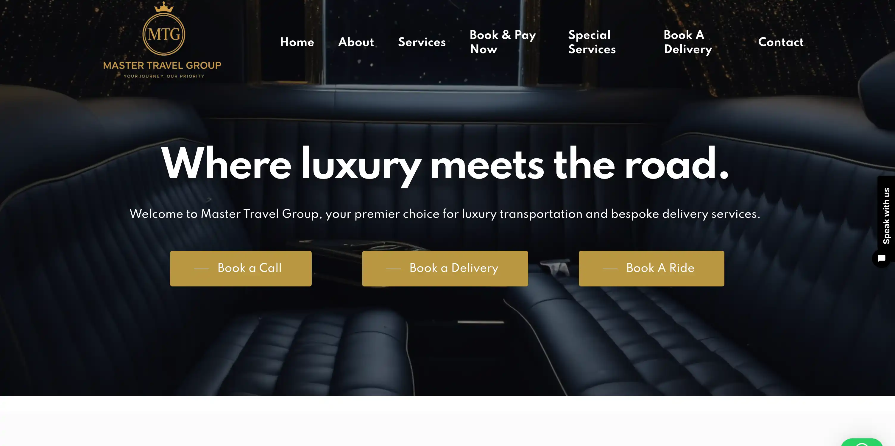
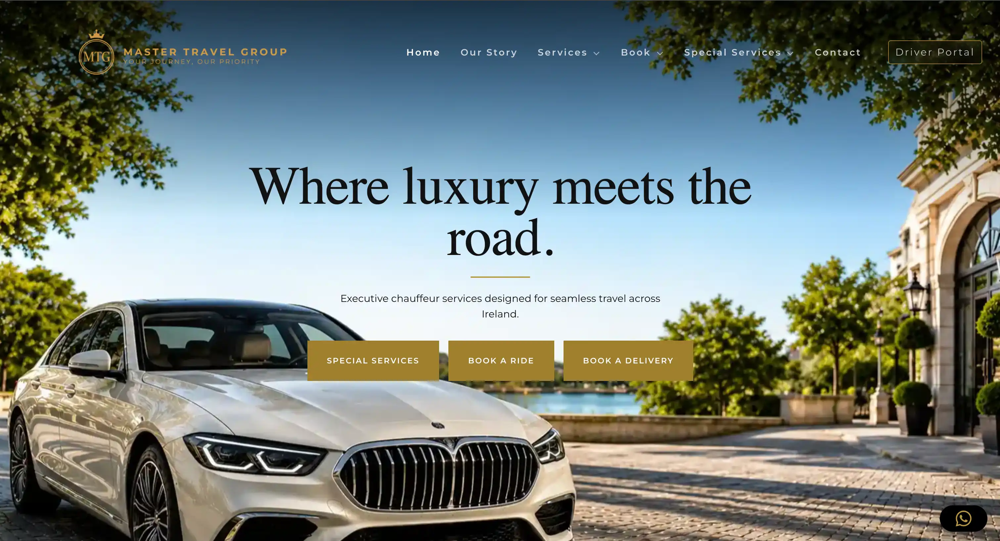

Internship Case Study · Live Website
Master Travel Group
Improving the digital presence of a luxury chauffeur company through SEO, WordPress optimisation, branding, digital marketing and light backend support.
Master Travel Group Limited
Digital Marketing, SEO & Website Optimisation Intern
March 2026 – May 2026
Remote internship completed from France
Project overview
Real website, real business constraints.
During my internship, I worked across the company’s website, SEO, social media, brand communication and live WordPress maintenance to make the digital presence feel more polished, consistent and trustworthy.

01
What I worked on
I worked on a live WordPress website, which meant every change had real business impact. My tasks included fixing layouts, improving performance, updating SEO foundations, creating social media content, refining brand consistency and supporting light backend-related changes.
The work combined design, technical problem-solving and digital marketing. I had to understand how the existing site was built, identify what was slowing it down or making it inconsistent, and make practical improvements without disrupting the live business website.
02
Website performance & stability
When I joined, the website had several performance issues, including slow loading times, heavy assets, unused plugins, duplicate CSS/JS and conflicts caused by two page builders being active at the same time.
I helped simplify the website setup by reducing unnecessary assets, improving mobile layouts, cleaning up page structure and making the site easier to maintain.
Before

After

03
WordPress, SEO & content
I worked directly inside WordPress to fix and improve pages across the website, including layout corrections, content updates, footer improvements, service page adjustments and visual refinements.
I also supported the SEO structure through page titles, meta descriptions, keywords, heading hierarchy, image alt text and service-page content.
The goal was to make the website clearer for users and search engines, especially across services such as airport transfers, corporate transport, private tours, wedding transport and premium travel support.
04
Events page
I created an events page designed to load event content automatically, making it easier for the company to keep the website active without manually rebuilding the page each time.
This was more than a static page: it supported website freshness, maintainability and future content updates for the business.
05
Brand content & handover
I created and organised social media content for Instagram and Facebook, with a focus on making the brand feel more premium, calm and consistent.
I also created a self-initiated intern handbook documenting the website setup, SEO workflows, performance testing, social media strategy, troubleshooting steps and future priorities.
06
What I learned
This internship helped me understand how design, SEO, performance, technical maintenance and brand positioning all connect on a real business website.
I learned how to prioritise practical improvements, communicate clearly, document my work and make careful technical decisions in a live WordPress environment.
Skills used